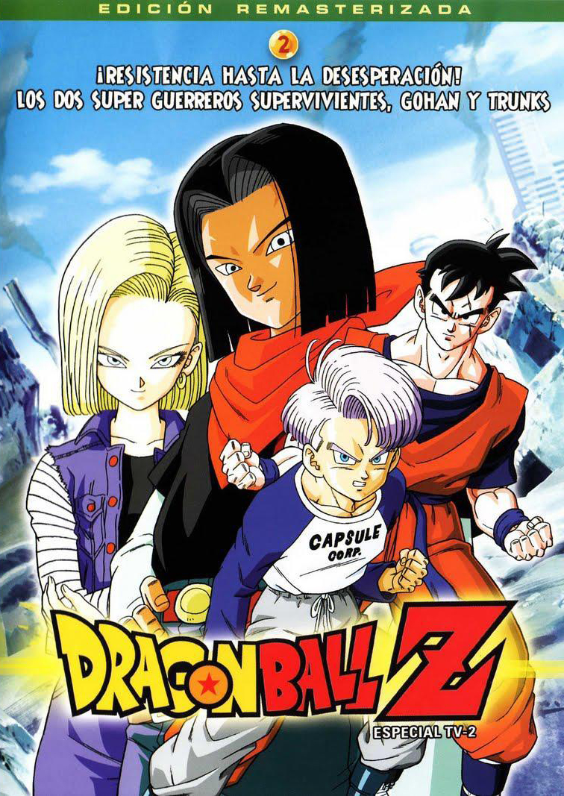
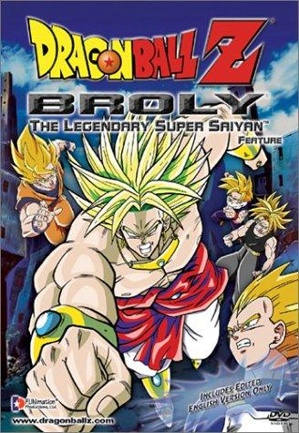
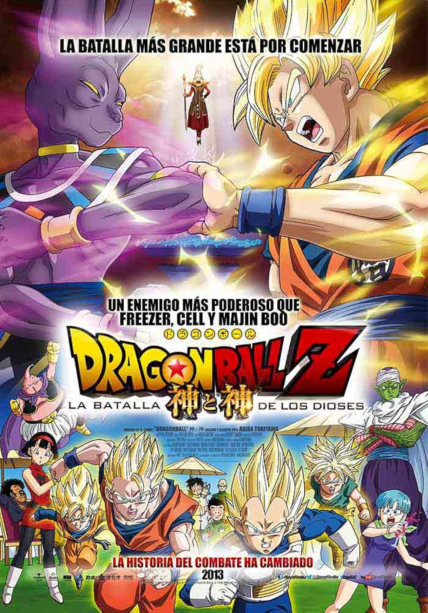
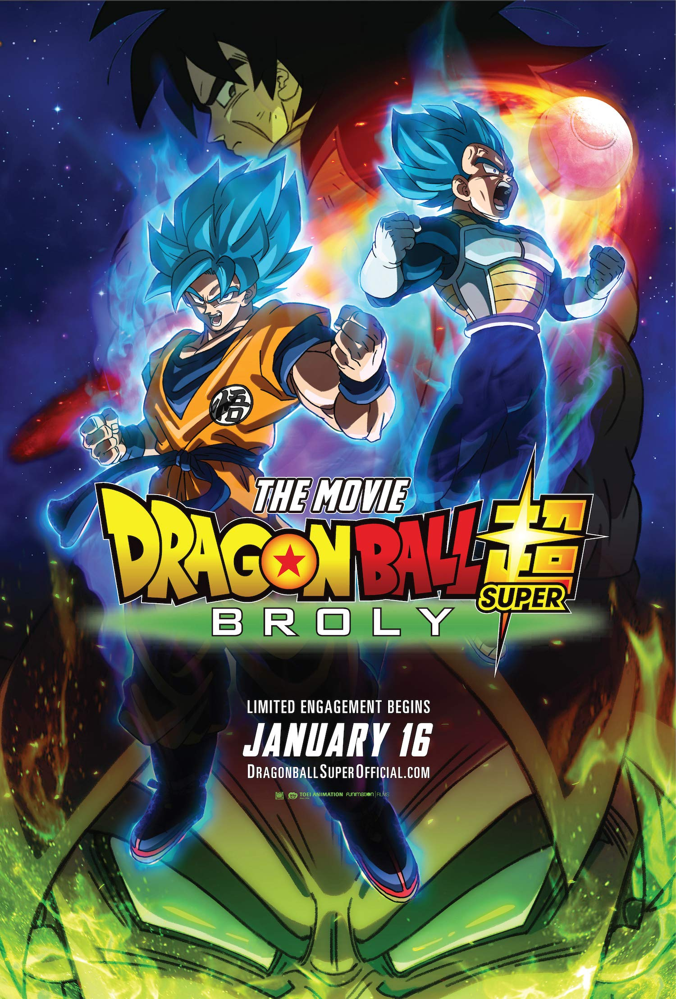
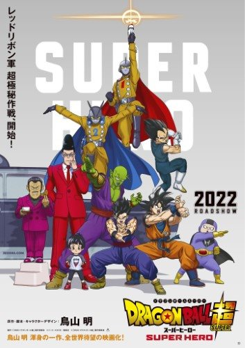

Las que consideramos indispensables de ver.
A pesar de ser un especial de televisión, es considerada una de las producciones más importantes y aclamadas. Muestra la cruda y apocalíptica línea temporal alternativa donde los Androides 17 y 18 destruyen el mundo, forjando el trágico origen de Trunks del Futuro.

Esta película introdujo a Broly, el Legendario Super Saiyajin, uno de los antagonistas más icónicos, populares y brutales de todo el universo cinematográfico de la serie, cuya enorme fuerza obligó a los Guerreros Z a llevar sus límites al extremo.

Una producción histórica que marcó el regreso oficial de Akira Toriyama a la franquicia tras años de ausencia. Introdujo el concepto de los Dioses de la Destrucción con Bills, el Ángel Wiss and la transformación del Super Saiyajin Dios, sirviendo como el cimiento directo para el nacimiento de Dragon Ball Super.

Es la película más taquillera en la historia de la franquicia. Su importancia radica en que vuelve completamente canónico al personaje de Broly, dándole un trasfondo mucho más profundo y humano, además de presentar una de las animaciones más espectaculares de toda la saga.

Esta entrega revolucionó la franquicia al ser la primera realizada completamente en animación 3D CGI. Además, es una pieza clave porque desplaza por un momento el protagonismo de Gokú y Vegeta para centrarse en el crecimiento de Gohan y Piccoro, otorgándoles nuevas y poderosas transformaciones.
